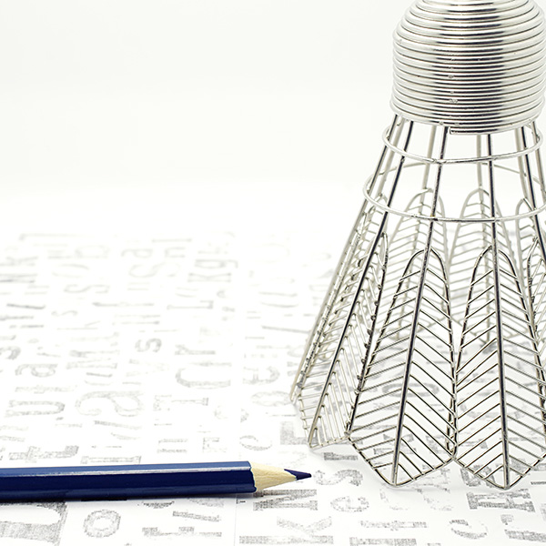

无论是进行有规则的羽毛球比赛还是作为一般性的健身活动，都要在场地上不停地进行脚步移动、跳跃、转体、挥拍，合理地运用各种击球技术和步法将球在场上往返对击，从而增大了上肢、下肢和腰部肌肉的力量，加快了锻炼者全身血液循环，增强了心血管系统和呼吸系统的功能。据统计，大强度羽毛球运动者的心率可达到每分钟160-180次，中强度心率可达到每分钟140-150次，低强度运动心率也可达到每分钟100-130次。长期进行羽毛球锻炼，可使心跳强而有力，肺活量加大，耐久力提高，包括肩周的运动和颈椎的活动，但是过大的运动量会导致腰肌劳损。运动可释放压力，促进身心健康。
羽毛球运动适合于男女老幼，运动量可根据个人年龄、体质、运动水平和场地环境的特点而定。青少年可作为促进生长发育、提高身体机能的有效手段进行锻炼，运动量宜为中强度，活动时间以40-50分钟为宜。适量的羽毛球运动能促进青少年增长身高，能培养青少年自信、勇敢、果断等优良的心理素质。老年人和体弱者可作为保健康复的方法进行锻炼，运动量宜较小，活动时间以20-30分钟为宜，达到出出汗、弯弯腰、舒展关节的目的，从而增强心血管和神经系统的功能，预防和治疗老年心血管和神经系统方面的疾病。儿童可作为活动性游戏方法来进行锻炼，让他们在阳光下奔跑跳跃，并要求他们能击到球，培养他们不畏困难、不怕吃苦、不甘落后的品质。羽毛球在中国有着良好的群众运动基础和大众普及亲和度。
羽毛球运动适合于男女老幼，运动量可根据个人年龄、体质、运动水平和场地环境的特点而定。青少年可作为促进生长发育、提高身体机能的有效手段进行锻炼，运动量宜为中强度，活动时间以40-50分钟为宜。适量的羽毛球运动能促进青少年增长身高，能培养青少年自信、勇敢、果断等优良的心理素质。老年人和体弱者可作为保健康复的方法进行锻炼，运动量宜较小，活动时间以20-30分钟为宜，达到出出汗、弯弯腰、舒展关节的目的，从而增强心血管和神经系统的功能，预防和治疗老年心血管和神经系统方面的疾病。儿童可作为活动性游戏方法来进行锻炼，让他们在阳光下奔跑跳跃，并要求他们能击到球，培养他们不畏困难、不怕吃苦、不甘落后的品质。羽毛球在中国有着良好的群众运动基础和大众普及亲和度。